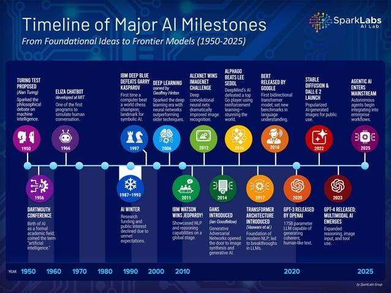

From Foundational Ideas to Frontier Models (1950–2025)
Course: Machine Learning Fundamentals
Artifact Type: AI & Machine Learning Timeline
Tools Used: Canva, Academic Research, Critical Analysis
Skills Demonstrated: Research, Visual Communication, Historical Analysis, Professional Reflection

Figure 1. Timeline of Major AI Milestones (1950–2025)
This artifact presents a visual timeline illustrating the major milestones that have shaped Artificial Intelligence from its origins in the 1950s through today's Generative AI revolution. The timeline highlights groundbreaking innovations, influential researchers, technological breakthroughs, and significant historical events that transformed AI from an academic research field into one of today's most impactful technologies.
The objective of this project was to research the historical evolution of Artificial Intelligence, identify significant milestones, and communicate the progression of AI through a visually organized timeline. Creating this artifact strengthened my understanding of AI's historical development while improving my research, analytical, and communication skills.
Researching the history of Artificial Intelligence changed my perspective on how technological innovation evolves. Before completing this project, I primarily associated AI with modern technologies such as ChatGPT and Generative AI. Studying the historical timeline helped me recognize that today's breakthroughs are the result of decades of research, experimentation, setbacks, and continuous innovation.
One of the most valuable lessons I learned is that technological progress rarely follows a straight path. The AI Winters demonstrated how limitations in computing power and unrealistic expectations slowed progress, while later breakthroughs in machine learning, cloud computing, and deep learning reignited innovation.
As a Data Analyst pursuing graduate studies in Artificial Intelligence and Machine Learning, this artifact strengthened my appreciation for the relationship between data, algorithms, computing resources, and business applications. Understanding AI's evolution provides valuable context for applying these technologies responsibly and effectively in future professional projects.
This artifact demonstrates my ability to:
The knowledge gained from this project provides a strong historical foundation for my future coursework in Artificial Intelligence and Machine Learning. Understanding the evolution of AI enables me to better appreciate current innovations while preparing to contribute to future advancements in data analytics, predictive modeling, and intelligent business solutions.